Last week we wrapped up descriptive statistics. We can now describe the shape, center, and spread of a distribution, as well as the position of any individual value within it. All of that material is fair game for Exam 1.
This week we take a step back and ask a question that really should come first: how were the data collected in the first place? How a set of data is collected determines what we are allowed to conclude from it. In particular, there are two questions we want to be able to answer about any study:
Suppose we wanted to know how many hours a week a typical University of Idaho student spends exercising. We obviously can’t ask every student, so how would we go about getting the data? Who would we ask, and how would we choose them?
Before we go any further, let’s start with some terminology:
Consider a small school with 100 students, and suppose we ask them “how many hours did you exercise last week?” If we ask all 100 students, that is a census, and their mean of 4.6 hours is the parameter. Now suppose the registrar’s list, which is our sampling frame, only has 90 students on it. The 10 students who enrolled late (shown in grey) have no chance of being chosen. A simple random sample of 10 students from the list (shown in red) has a mean of 4.4 hours, which is our statistic. The sampling error is then 4.4 - 4.6 = -0.2 hours. If we took another random sample, we would get a different sampling error.
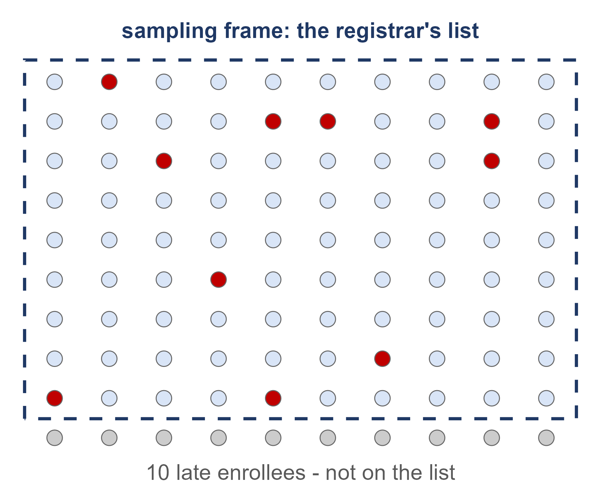
Practice: For each of the following, what is the sampling frame? Does it match the population well?
Whenever we read about a study, there are some questions we should ask ourselves before we trust the results. Section 1.2 of the textbook gives a nice list of things to look out for (the Critical Evaluation list):
We will spend most of this lecture on these issues. We start with bias and self-selected samples, then nonresponse and question wording, and finally causality and confounding in the second half.
OxyContin. Purdue promoted OxyContin, a 12-hour opioid painkiller, using a chart of blood levels over time with the caption “Fewer ‘peaks and valleys’ than with immediate-release oxycodone.” The catch is that the chart was drawn on a logarithmic y-axis (CBS News, 2011). On a log axis, equal distances represent equal ratios rather than equal differences, so a steep drop can look pretty gentle. The figure below is only an illustration and is not Purdue’s actual data. It shows a single curve matched to the values in the 2008 FDA label for a 10 mg dose (a peak of 10.6 ng/mL at about 2.7 hours and a half-life of 4.5 hours), drawn on both types of axis.
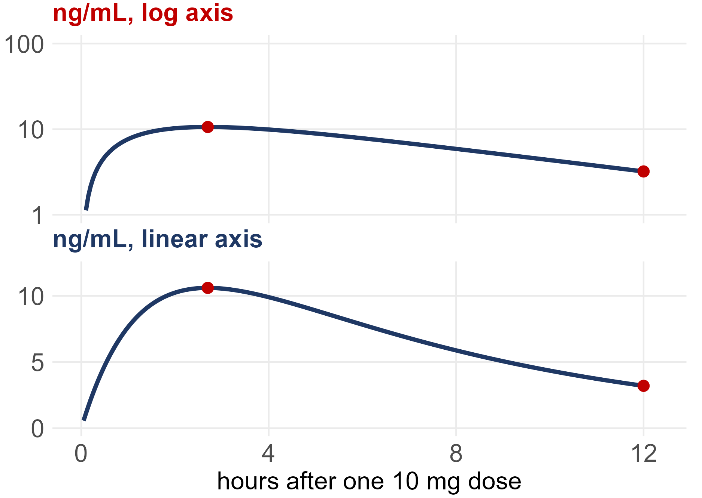
On the linear axis, the blood level drops from 10.6 to 3.2 ng/mL over the 12 hours, which is a drop of about 70%. In 2007, The Purdue Frederick Company pleaded guilty to misbranding OxyContin “with the intent to defraud and mislead.” The government’s statement of facts says sales staff used “graphs that exaggerated the differences between blood plasma levels” of OxyContin and other pain medications, and the company paid about $600 million (U.S. Attorney, Western District of Virginia, 2007). To be clear, there is nothing wrong with a log axis by itself, and scientists use them all the time. The problem is using one to back up a claim that the reader has no way to check.
ExxonMobil. We should read a company’s own report just as carefully as anyone else’s, especially when the company has a financial stake in the answer. ExxonMobil’s 2024 Advancing Climate Solutions report shows its plan for cutting its emissions intensity (emissions per unit produced) as a bar chart with no numbers on the y-axis. Its abatement curve has no axis numbers either. So a reader can’t tell how big the planned cut actually is, or how much of it depends on “CCS, hydrogen, and/or future advancements” (Union of Concerned Scientists, 2024).
Keep in mind that intensity can go down while total emissions go up, if the company produces more. In this case, the report’s own table shows both going down from 2016 to 2023. Intensity fell from 26.4 to 23.3 tonnes per 100 tonnes of throughput or production, and emissions from its operations (Scope 1 and 2) fell from 117 to 98 million tonnes. What neither number includes is the emissions from burning the oil and gas the company produces. That was about 540 million tonnes in 2023, roughly 85% of its footprint, and the company sets no target for it (ExxonMobil, 2024).
There are two ways of getting a sample that are tempting because they are quick, cheap, and easy:
A convenience sample is made up of whoever is easiest to reach. For example, we could stand outside the Student Recreation Center and ask the first 50 people who walk by.
A voluntary response sample is one where we put out a call and let people decide whether or not to respond. For example, we could post a poll on a UI student Instagram account and count the replies. The textbook calls these self-selected samples.
What could go wrong with each of these?
Consider the Rec Center survey first. Its average will be too high, since the people at the Rec Center are the ones who exercise, and students who never go there have no chance of being chosen. The Instagram poll only hears from followers who happen to see the post and decide to reply, which will often be the proudest gym-goers or people who feel strongly one way or the other. Also notice that asking 2,000 people instead of 50 does not fix either problem. More of the same kind of people just gives us the same wrong answer with more confidence.
What these two designs have in common is that a person decides who ends up in the sample. Either the researcher picks whoever is handy, or the respondents pick themselves. A design like this is called biased, meaning it systematically favors certain outcomes over others.
Practice: For each scenario below, identify the type of sample and what could go wrong.
On December 18, 2022, Elon Musk posted a poll on Twitter asking “Should I step down as head of Twitter? I will abide by the results of this poll.” In 12 hours the poll got more than 17.5 million votes, and 57.5% of them said yes (NBC News; Associated Press). But the only people who could vote were those who saw the post and chose to vote, which was mostly Musk’s own followers, and there was nothing stopping fake accounts from voting. This is a voluntary response sample. The 17.5 million votes only tell us about the people who chose to vote, and the huge sample size doesn’t change that.
Many online polls use what are called opt-in panels. Anyone can sign up to take surveys, and they get paid for each survey they complete. In opt-in samples, 12% of adults under 30 (and 24% of Hispanic respondents) said they were licensed to operate a nuclear submarine. In December 2023, an opt-in poll found that 20% of adults under 30 agreed that “the Holocaust is a myth.” When Pew Research Center asked the same question to a probability-based (i.e., random) sample, the figure was 3% (Mercer, Kennedy and Keeter, 2024). Most of this difference came from bogus and careless respondents who were answering for the money rather than giving their real opinions. So when you see a shocking number about some subgroup, keep in mind that it may say more about who signed up for the poll than about what people actually think.
A helpful way to think about bias is to picture a target. The parameter is the bullseye, and each estimate is one shot at the target. Every time we take a sample and compute the statistic, we take a shot and see where it lands. If we take a new sample, we take a new shot. There are two different things that can go wrong:
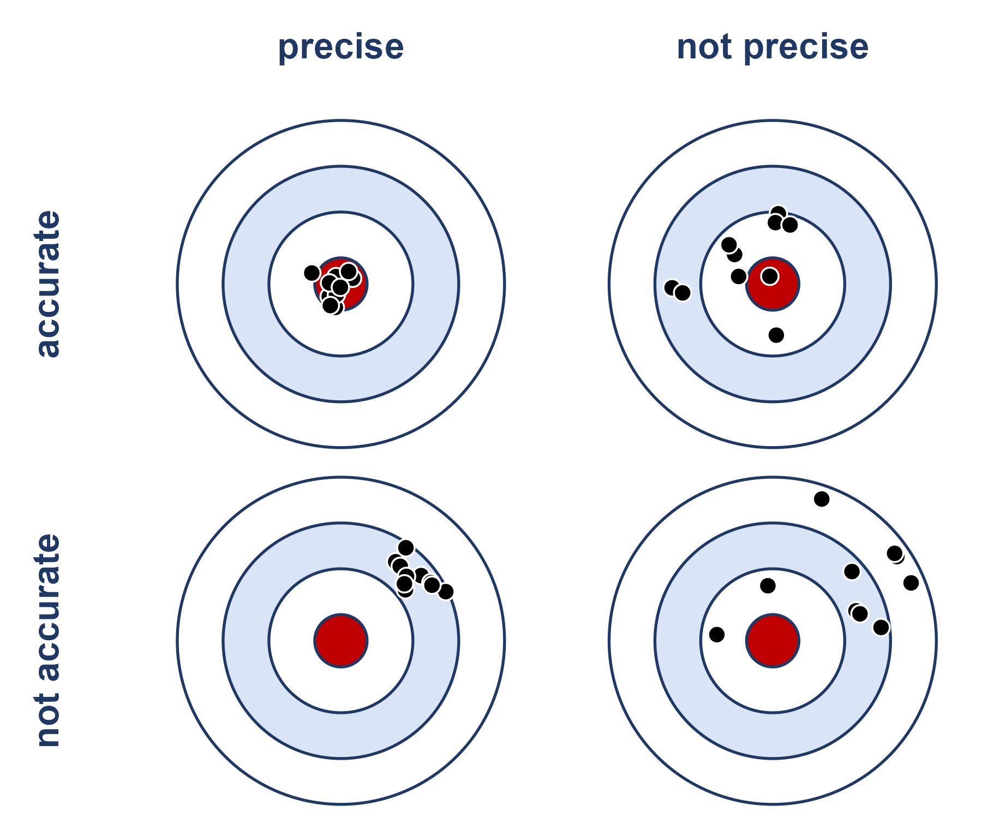
Convenience and voluntary response samples are biased. No matter how carefully we carry them out, they are aimed at the wrong spot.
To see this, consider the simulation below. Suppose that 40% of UI students exercise at least three times a week. One survey asks \(n = 2000\) people at the Student Recreation Center, where 75% of the people exercise that often. The other survey is a simple random sample of only \(n = 200\) students. We repeat each survey 5000 times.
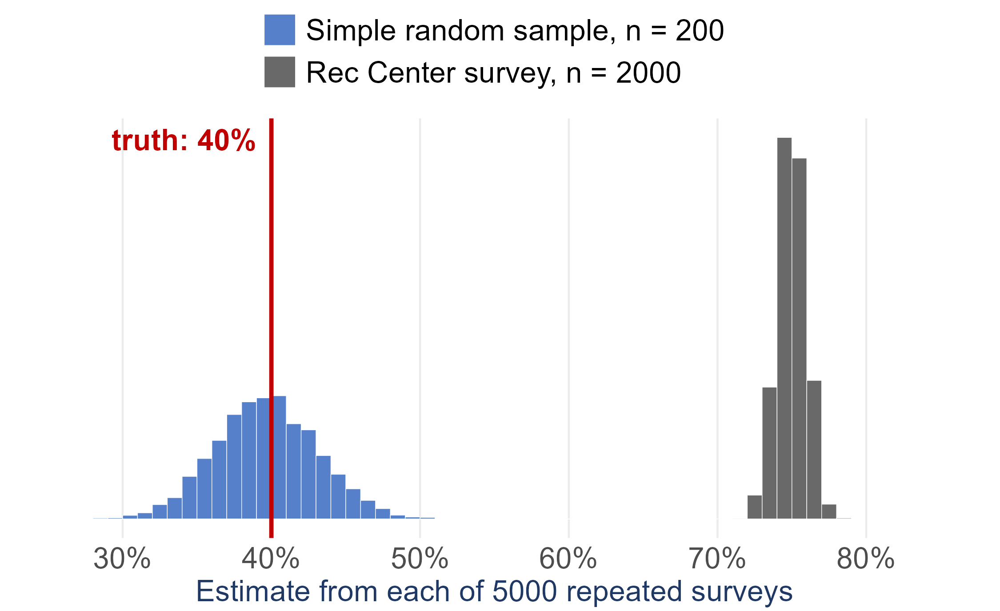
Notice that the Rec Center survey is much more precise, since its estimates barely change from one repeat to the next. But every single one of its 5000 estimates misses the true value by about 35 percentage points. Simply put, collecting more data gets us more precision, but only a better design gets us accuracy.
Convenience and voluntary response samples go wrong because a person gets to decide who is in the sample, so the solution is to take the person out of the decision. Random sampling uses chance to choose the sample, so neither the researcher nor the respondents decide who gets in. Since nobody is doing the choosing, the selection process can’t systematically favor anyone. Of course, chance will still cause our estimate to change from sample to sample. However, it changes according to rules we understand, which means we can measure how much it changes. This is exactly what the standard error does.
A simple random sample (SRS) of size \(n\) is chosen so that every possible group of \(n\) units has the same chance of being the sample. As a result, every unit in a population of size \(N\) has the same chance, \(n/N\), of being included in the sample.
All of the grid pictures in these notes use the same population: \(N = 100\) students on a \(10 \times 10\) grid, where each row is a class year (40 first-years, 30 sophomores, 20 juniors, and 10 seniors). Every design draws a sample of \(n = 20\) students, so each student in the SRS below had a \(20/100\), or 1 in 5, chance of being selected.
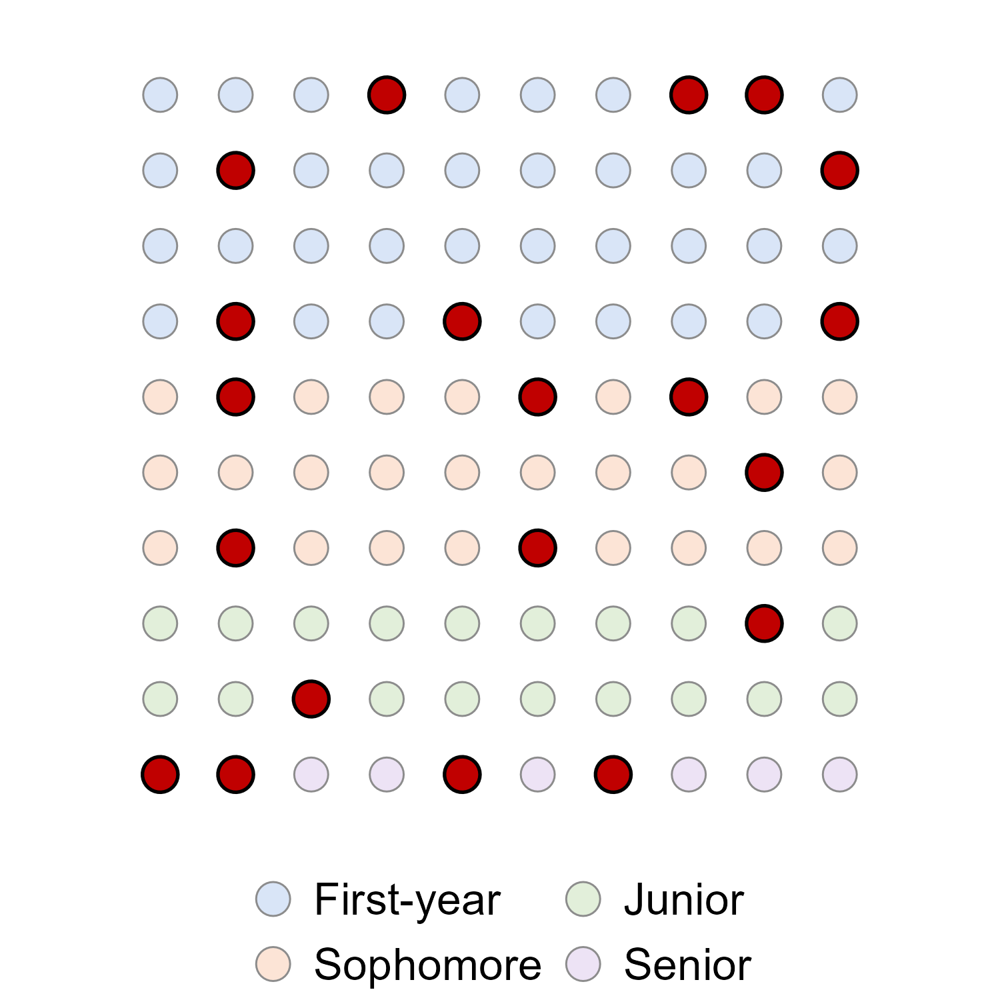
Take a look at the class years of the students in red. This SRS happened to pick 4 seniors but only 2 juniors, even though there are twice as many juniors as seniors. This isn’t a problem with the method. An SRS is fair on average across all of the samples it could have produced, but that doesn’t mean every individual sample will be balanced.
In practice, drawing an SRS comes down to three steps:
In R, the sample() function takes care of step 2. For
example, using the heights.csv data from the course Data
page (\(N = 379\)):
heights <- read.csv('Data/heights.csv')
set.seed(251) # makes the draw repeatable
srs_rows <- sample(1:nrow(heights), 30) # 30 of the 379 row numbers
head(heights[srs_rows, ])## HEIGHT GENDER
## 348 73 Male
## 291 69 Male
## 48 63 Female
## 339 72 Male
## 238 69 Female
## 59 63 FemaleBy default, sample() draws without
replacement, meaning once a unit has been picked it can’t be
picked again. This is the usual choice for surveys. When we sample
with replacement, every unit is put back after it is
drawn, so the same unit could show up in the sample more than once
(sample(..., replace = TRUE)). When \(N\) is much larger than \(n\), the two methods are practically the
same, because the chance of drawing the same unit twice is very
small.
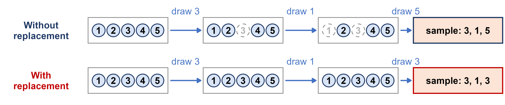
In the figure above, when we sample without replacement each ball that is drawn is removed from the bag, so the sample 3, 1, 5 can’t have any repeats. When we sample with replacement, every ball goes back in the bag before the next draw, so 3 can be drawn twice.
A national poll. In State of the Facts 2026, the AP-NORC Center for Public Affairs Research and USAFacts asked U.S. adults how much they trust government information and AI. The poll interviewed 1,036 adults from July 29 to August 10, 2026: 1,017 online and 19 by phone, in English or Spanish. The margin of sampling error is \(\pm 4.1\) percentage points (AP-NORC and USAFacts, 2026). The respondents came from AmeriSpeak, NORC’s probability-based panel. NORC randomly selects U.S. addresses and then recruits those households by mail, by phone and in person. Nobody can sign themselves up, so chance decides who is invited (NORC, About AmeriSpeak). That is the opposite of the opt-in panels above. Random selection doesn’t solve everything, though. Only 10.3% of the invited panel members completed this survey (AAPOR response rate 3), so nonresponse is still a concern. We come back to it under nonsampling error below. The methodology is on page 42 of the full report.
A longitudinal study. The UK Biobank is a cohort of about 500,000 UK adults aged 40–69 who agreed to join between 2006 and 2010. Researchers have followed them through their health records ever since. From 2013 to 2015, 103,615 of them wore a wrist sensor with a light meter for 7 days. A 2026 study then removed people with unreliable sensor data, 2,770 night-shift workers, anyone who already had heart disease, and anyone without a later heart MRI. That left 11,071 people, who had an MRI of their heart a median of 3.1 years after wearing the sensor. Hospital and death records were followed for 8 to 10 years (Dai et al., 2026; ESC, 2026). Because the same people are measured at more than one point in time, this is a longitudinal study: night light was measured first and the heart later. It is not a random sample of any population, however. The authors point out that the UK Biobank cohort is mostly White and healthier than the general population, so the results may not generalize to everyone. We return to this study under association vs. causation.
A systematic sample selects every \(k^{th}\) unit from an ordered list, starting at a randomly chosen point among the first \(k\) units. With \(N = 100\) and \(n = 20\), we have \(k = N/n = 5\). In the figure below, the 100 students are numbered in list order. The random starting point was 2, so the sample is made up of positions 2, 7, 12, 17, …, 97.
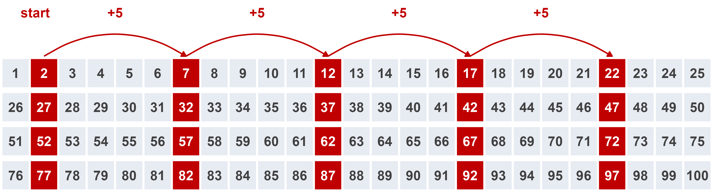
Systematic sampling is easy to carry out in the field, where there often isn’t a list at all until the units show up. As long as the order of the list has nothing to do with what we are measuring, a systematic sample behaves like an SRS. The danger is when the list has a repeating pattern that lines up with \(k\). For example, on our seating grid with rows of 10, counting every 5th seat would select the same two columns every time.
For a project dataset with \(N = 379\) rows and \(n = 30\), we have \(379/30 = 12.6\), so we would take \(k = 12\) and pick a random starting point between 1 and 12:
set.seed(251)
k <- 12
start <- sample(1:k, 1)
sys_rows <- seq(start, by = k, length.out = 30)
sys_rows## [1] 7 19 31 43 55 67 79 91 103 115 127 139 151 163 175 187 199 211 223
## [20] 235 247 259 271 283 295 307 319 331 343 355Strata are groups of units that are similar in some way, and they are formed before we take the sample. Examples include class year, region, age group, or sex. A stratified random sample takes a separate SRS within each stratum and then combines them.
Under proportional allocation, each stratum gets its share of the total sample size \(n\). Our population is 40% first-years, 30% sophomores, 20% juniors, and 10% seniors, so a sample of 20 students would take 8, 6, 4, and 2 students from each class year, respectively.
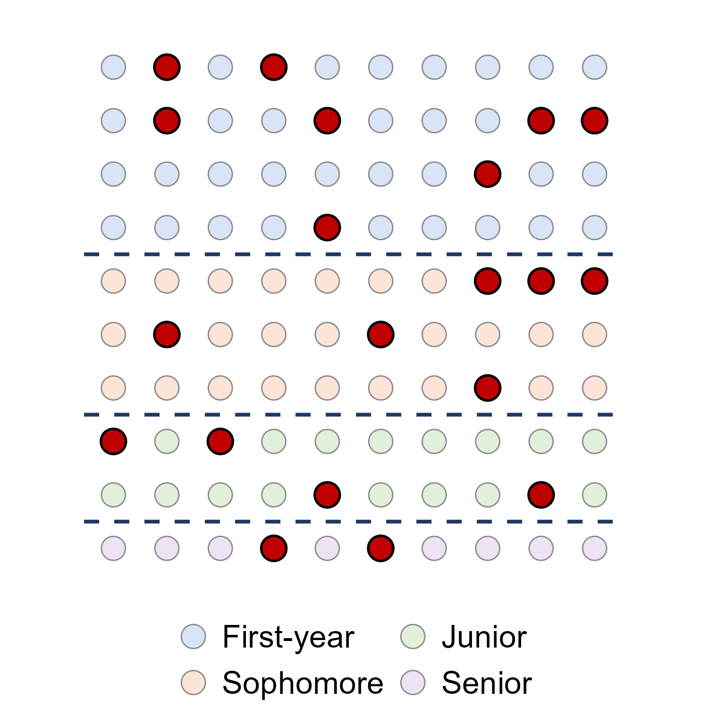
Stratifying guarantees that every group is represented in the sample, so we can’t end up with only 2 juniors by bad luck. It also gives more precise estimates than an SRS of the same size, as long as units are similar within strata and different between strata. This is because the variation from stratum to stratum is removed from the sampling error. If the strata are no more alike inside than the population as a whole, stratifying doesn’t buy us anything.
The heights.csv data has \(N =
379\) people: 262 female and 117 male. For a stratified sample of
\(n = 30\) we would take
\[\text{female: } 30 \times \frac{262}{379} = 20.74 \approx 21, \qquad \text{male: } 30 \times \frac{117}{379} = 9.26 \approx 9\]
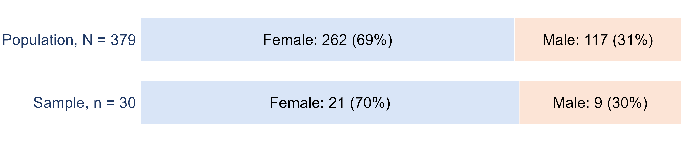
We would then draw an SRS of 21 of the women and a separate SRS of 9 of the men:
set.seed(251)
women <- which(heights$GENDER == 'Female')
men <- which(heights$GENDER == 'Male')
strat_rows <- c(sample(women, 21), sample(men, 9))
table(heights$GENDER[strat_rows])##
## Female Male
## 21 9Large national surveys use stratification. For example, the Current Population Survey, which is used to produce the U.S. unemployment rate, groups areas into strata that are “as homogeneous as possible with respect to labor force and other social and economic characteristics” and then samples within each stratum (Census Bureau and BLS, Technical Paper 77).
A cluster is a group of units that occurs naturally, such as a dorm, a classroom, a city block, or a village. A cluster sample takes an SRS of clusters and then measures every unit in the clusters that were chosen. In the figure below, each column is a cluster, and two columns were chosen at random.
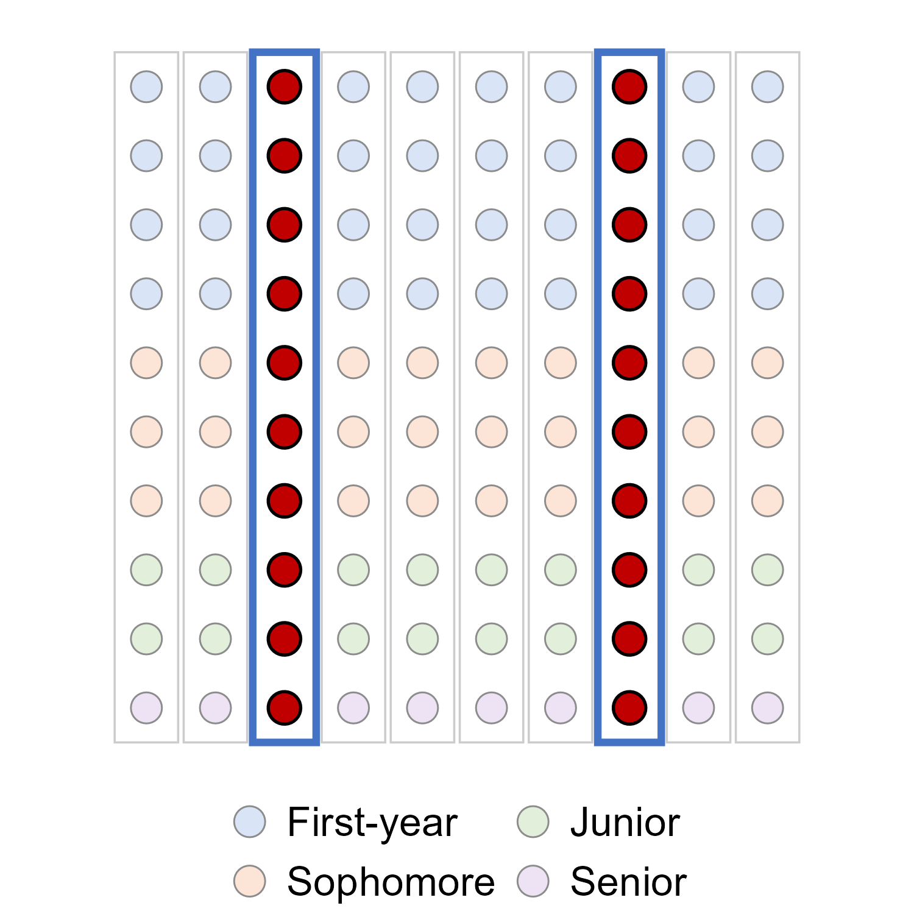
The main appeal of cluster sampling is practical. We only need a list of the clusters rather than a list of every individual, and visiting a few clusters is much cheaper than traveling to units spread out across a whole region. Cluster sampling works best when each cluster is like a mini-population, meaning it is mixed inside, the same way every column above contains all four class years. When units in the same cluster tend to be similar to each other (e.g., students in the same dorm or households on the same street), a cluster sample carries less information than an SRS of the same size, and its estimates are less precise.
A two-stage cluster sample first takes an SRS of clusters (stage 1) and then takes an SRS of units within each chosen cluster (stage 2). In the figure below, 4 of the 10 columns were chosen, and then 5 students were chosen from each of those columns.
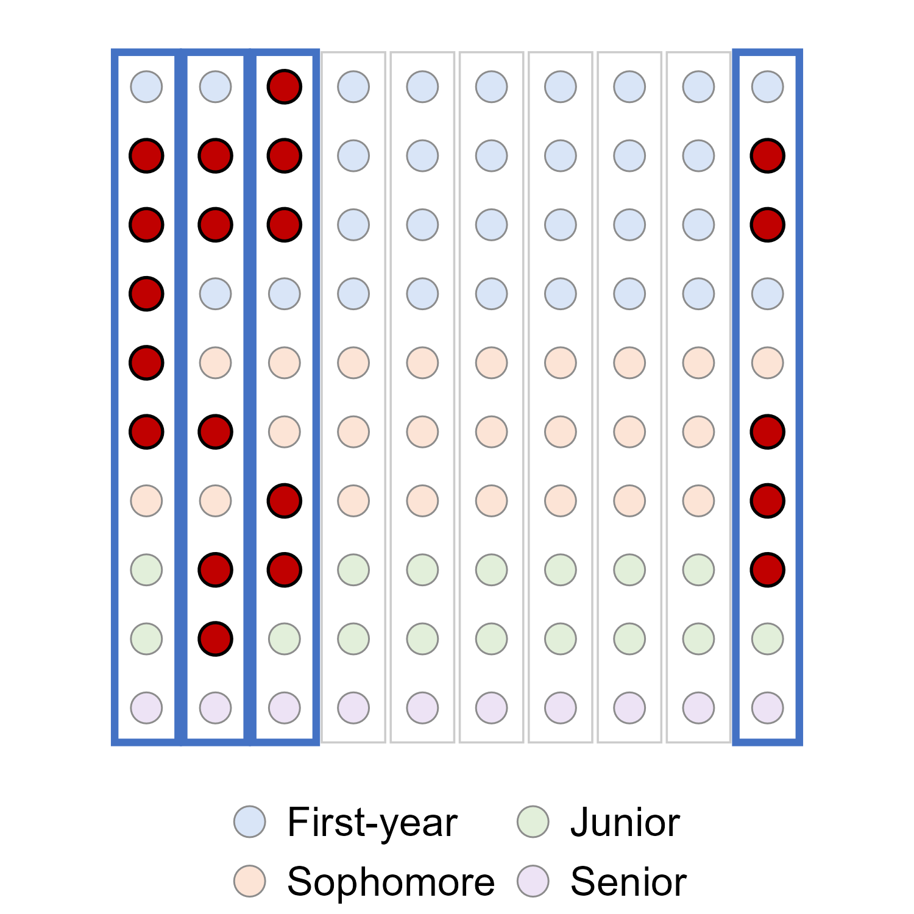
Election exit polls are a good example of combining several of these designs. For the 2024 election, the National Election Pool drew a stratified probability sample of 279 polling places. Within each polling place, an interviewer approached every \(n^{th}\) voter leaving, which is a systematic sample within each cluster (National Election Pool methods statement, 2024). Similarly, NHANES, the U.S. health and nutrition survey, uses “a complex, multistage, probability sampling design,” which samples counties, then segments within counties, then households, and finally individuals (CDC, NHANES sample design).
Strata and clusters are easy to mix up, since both involve dividing the population into groups. The difference is in what the groups look like inside, and as a result, how many of the groups we sample:
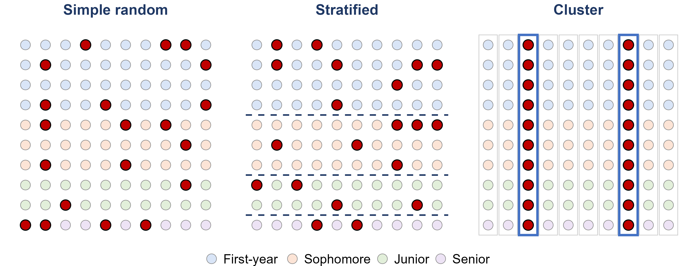
| Strata | Clusters | |
|---|---|---|
| Units inside a group are… | alike | mixed (a mini-population) |
| Groups differ from each other? | yes | ideally not |
| Which groups are sampled? | every stratum | some clusters |
| Within a chosen group… | an SRS | every unit (or an SRS, in two stages) |
| Main benefit | precision, and every group represented | cost and convenience |
No sample will match its population exactly. It helps to separate the reasons why into two types of error:
Even if we use a perfectly random design, we can still end up with a biased sample. Three common culprits are:
Just like before, a larger sample doesn’t fix any of these.
Pew Research Center’s telephone surveys reached 36% of the people they called in 1997, but only 6% in 2018 (Kennedy and Hartig, 2019). A low response rate by itself doesn’t make a survey biased. It only causes bias when the people who respond are different from the people who don’t. Unfortunately, this is usually impossible to check, because we have no data on the people who didn’t respond.
Nonresponse also came up after the 2020 presidential election. National polls in the final two weeks overstated Joe Biden’s margin by 3.9 points on average, which was the largest polling error for the national popular vote in 40 years. The American Association for Public Opinion Research’s task force ruled out several explanations, like late-deciding voters, and concluded that “at least some of the polling error in 2020 was caused by unit nonresponse.” However, without knowing how the people who didn’t respond compare with the people who did, they could not pin down the primary source of the error (AAPOR Task Force on 2020 Pre-Election Polling).
In September 2013, CNBC asked half of the people in its poll about “Obamacare” and the other half about “the Affordable Care Act.” These are the same law! Opposition was 46% when it was called “Obamacare” and 37% when it was called “the Affordable Care Act.” Interestingly, support was also higher for “Obamacare” (29% vs. 22%). This is because far fewer people chose “don’t know” for “Obamacare” (12%) than for the Affordable Care Act (30%) (NBC News, 2013; Harvard Political Review). So the words we use in a question can change the answers we get.
The wording of a question can also change what the question is actually measuring. In January 2003, 68% of Americans favored “taking military action in Iraq to end Saddam Hussein’s rule.” But when the question added “even if it meant that U.S. forces might suffer thousands of casualties,” support dropped to 43% (Pew Research Center, Writing Survey Questions).
Part 3 of the course project asks you to draw a sample of 20 to 30 observations from your dataset. When you write this part up, you should:
You can start on Steps 1 through 4 of the project once we finish this lecture.
If you want some practice before starting the project, try the textbook’s Sampling Experiment lab (Section 1.6). It lists restaurants by city and by entree cost, and asks you to draw a simple random sample, a systematic sample, two stratified samples, and a cluster sample from the same list. The examples in Section 1.2 (Examples 1.11 to 1.13) are also good practice for identifying sampling designs.
Most studies are interested in the relationship between two or more variables. Again, let’s start with some terminology:
The key question for telling these apart is: who decided which group each unit ended up in? If the units themselves (or circumstance) decided, then it is an observational study. If the researcher decided, it is an experiment. Note that this has nothing to do with how the units were sampled. An experiment on volunteers is still an experiment, and an observational study on a random sample is still an observational study.
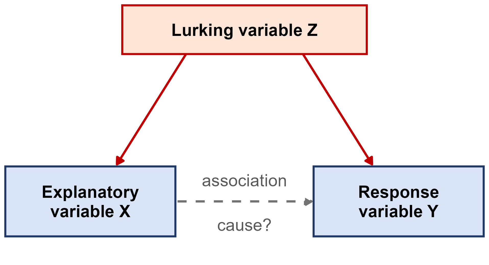
For example, towns that sell more ice cream also have more drownings. This association is real (it shows up in the data every year), but the causal story is wrong. Hot weather is a lurking variable that drives both. It is important to note that a lurking variable doesn’t create a fake association. The association is real, it just has the wrong explanation. An observational study by itself can’t rule this out, because the groups being compared may differ in ways that nobody measured.
For many years, large observational studies found that women who took hormone therapy after menopause had much less heart disease. In the Nurses’ Health Study, which followed 59,337 women, current users of estrogen plus progestin had a relative risk of major coronary heart disease of 0.39 compared to non-users (Grodstein et al., 1996). Millions of women were prescribed hormones, partly to protect their hearts.
Then the Women’s Health Initiative randomly assigned 16,608 women aged 50 to 79 to take either estrogen plus progestin or a placebo. In 2002, after an average of 5.2 years, the trial was stopped early because the risks outweighed the benefits. Invasive breast cancer had crossed its stopping boundary, and the hormone group actually had more coronary heart disease, not less (hazard ratio 1.29) (Writing Group for the WHI Investigators, 2002).
So why did the observational studies point in the wrong direction? It turns out that women who chose to take hormone therapy tended to be wealthier, better educated, and healthier to begin with. When the observational studies were pooled and adjusted for socioeconomic status, the apparent benefit went away (Humphrey, Chan and Sox, 2002). In the randomized trial, random assignment balanced these lurking variables between the two groups automatically.
It is worth being precise about what that trial did and did not test, because the result was reported far more broadly than it was designed to support. The WHI estrogen-plus-progestin trial was a primary prevention trial: it enrolled postmenopausal women aged 50 to 79 with an intact uterus, whose average age was about 63, more than a decade past the typical age of menopause. Every woman in the treatment group received the same fixed daily dose of one oral formulation, 0.625 mg of conjugated equine estrogens plus 2.5 mg of medroxyprogesterone acetate in a single tablet. Its primary outcome was coronary heart disease, with invasive breast cancer as the primary adverse outcome. It was not asking whether hormone therapy relieves menopausal symptoms, it did not test transdermal patches or doses tailored to the patient, and it did not enroll perimenopausal women at all. Its conclusion was about that regimen, started that late, used for chronic disease prevention.
The labeling has since caught up with those distinctions. In November 2025 the FDA asked manufacturers to revise the labels of menopausal hormone therapy products, noting that the average WHI participant was 63 and that the formulation tested is “no longer in common use” (FDA, 2025). On February 12, 2026 the FDA approved the first batch of those changes, removing the statements about cardiovascular disease, breast cancer, and probable dementia from the boxed warning of six products (FDA, 2026). The boxed warning about endometrial cancer remains for estrogen-alone products, and information about cardiovascular and breast cancer risk remains elsewhere in the labeling; what changed is how prominently and how broadly the risks are stated. The FDA’s labeled recommendation is now to begin systemic therapy within 10 years of menopause, generally before age 60, with dose, route, and duration individualized.
Current reviews make the same point: timing, formulation, and route of administration all matter, and transdermal estradiol appears to have a safer cardiovascular profile than the older oral preparations (Blackburn and Kunadian, 2026). A 2025 analysis of more than 3,800 postmenopausal women, presented at The Menopause Society annual meeting, found less anxiety and depression with transdermal than with oral therapy and no difference in cardiovascular disease, concluding that the route “should be individualized” (The Menopause Society, 2025). That one is a conference presentation rather than a peer-reviewed paper, so treat it as preliminary.
For our purposes, the interesting part is that the lurking-variable problem from 1996 has not gone away. Observational studies again report lower cardiovascular risk among women who start therapy early: in a 2026 cohort of 83,670 matched pairs, women who began within a year of menopause had a cardiovascular disease hazard ratio of \(0.70\), about 30% lower than matched non-users (Lu et al., 2026). But the 2025 Cochrane review of the randomized trials still finds little to no difference in coronary events for women starting within 10 years of menopause (relative risk \(0.94\), 95% CI \(0.78\) to \(1.13\)), with increased stroke and venous thromboembolism (Bofill Rodriguez et al., 2025).
The randomized one. Women who choose hormone therapy are still healthier than women who do not, so the observational gap may once again be partly selection rather than effect. This is not a reason to dismiss the newer evidence, and it is not the 2002 story repeating itself: the case for early, individualized therapy in women with symptoms rests on strong evidence for symptom relief, on the mismatch between WHI’s population and the women actually being treated, and on the timing evidence. It does not yet rest on a demonstrated randomized cardiovascular benefit. Keeping those two claims separate is exactly the skill this section is about.
A lurking variable can even make an association point the wrong way. The NIH-AARP Diet and Health Study followed 402,260 adults (229,119 men and 173,141 women) aged 50 to 71 from 1995 to 2008, and asked them at the start how much coffee they drank. When the researchers adjusted only for age, men who drank 6 or more cups a day had a 60% higher risk of death than men who drank no coffee (hazard ratio 1.60). However, coffee drinkers were also much more likely to smoke: 34.7% of the men who drank 6 or more cups a day were current smokers, compared with 4.8% of the men who drank none. After adjusting for smoking and other potential confounders, the same comparison showed a 10% lower risk of death (hazard ratio 0.90), with fewer deaths from heart disease among coffee drinkers as well (Freedman et al., 2012).
Smoking. Heavy coffee drinkers smoked far more, and smoking, not coffee, is what raised their risk of death. Once smoking was accounted for, the harmful-looking “coffee effect” disappeared. Keep in mind that this is still an observational study. The authors state that they cannot tell whether the lower risk after adjustment is caused by coffee or is just an association.
Two decades of better-adjusted research have kept pointing the same way. A 2026 analysis of 354,957 UK Biobank participants, followed for a median of 13 years, found that people drinking 5 or more cups a day had a lower risk of cirrhosis (hazard ratio \(0.68\), 95% CI \(0.58\) to \(0.79\)), liver cancer (\(0.53\), \(0.34\) to \(0.83\)), and death from liver disease (\(0.58\), \(0.45\) to \(0.74\)) than non-drinkers, with less liver fat on MRI in the subgroup that was scanned (Kim et al., 2026). Notice the cohort: this is the same UK Biobank used in the light-at-night study, so the same caveat applies. The authors say plainly that “residual confounding and reverse causation cannot be excluded” and that their participants were mostly of European ancestry and relatively health-conscious.
For the heart specifically, the American Heart Association reviewed this literature in a 2026 scientific statement and reported that caffeine, “studied primarily in the context of coffee, has been shown either to have no relationship or to be associated with a lower risk of coronary artery disease and heart failure”, with moderate consumption also associated with lower stroke risk (Marcus et al., 2026). The statement is careful about two things worth repeating in class. First, “the majority of human subject-based research is observational”. Second, coffee is not one exposure: unfiltered coffee raises LDL cholesterol, and high-dose caffeine in energy drinks looks harmful rather than helpful. There is even a little randomized evidence now, and it cuts both ways: in a trial among regular coffee drinkers, caffeinated coffee lowered the occurrence of atrial fibrillation but increased premature ventricular contractions.
So the whole story runs the other way from the hormone therapy example, and that contrast is the point:
A lurking variable does not push in a predictable direction. It pushed the estimate toward benefit in one case and toward harm in the other, which is why the fix is the study design rather than a correction applied afterwards.
Sometimes an experiment is impossible or unethical. For example, nobody can randomly assign people to smoke for thirty years. And yet we are confident that smoking causes lung cancer. How? The evidence was built up over decades of observational studies, and it was convincing because it had many features at once (Hill, 1965):
In 2014, fifty years after the first federal report on smoking, the Surgeon General’s report concluded that cigarette smoking and secondhand smoke cause at least 480,000 premature deaths a year in the United States, including about 127,700 deaths from lung cancer (U.S. Department of Health and Human Services, 2014). The point is that without an experiment, a causal claim needs this much evidence behind it. A single observational study is never enough.
In September 2026, the European Heart Journal published a study of 11,071 adults from the UK Biobank (its sampling design is described under “Examples: two recent sampling designs” above). Each participant wore a light sensor on their wrist for 7 days between 2013 and 2015, and about 3 years later each one had an MRI of their heart. Compared with participants who had no light above 3 lux during the least active part of their night, the participants with the most light above 3 lux had 2.4% more left ventricular mass (adjusted for height), heart walls that were 1.5% thicker, and a 1.9% lower myocardial contraction fraction, which is one measure of how well the heart muscle pumps. These differences grew steadily as the amount of night light went up, i.e., a dose-response pattern (Dai et al., 2026). The European Society of Cardiology’s press release about the study was titled “Too much light at night changes the shape and working of the heart” (ESC, 2026).
Nobody was assigned to sleep in a bright room or a dark room. The researchers simply measured the light people already had at night, so this is an observational study. The authors adjusted for a long list of variables, including age, smoking, physical activity, BMI, air pollution, and neighborhood deprivation, and they state themselves that the observational design does not allow them to conclude cause and effect. Keep in mind that adjusting for a variable only helps if that variable was measured. In the editorial published alongside the study, Münzel, Kuntic and Daiber point out that traffic noise was not measured and could still be confounding the results, that the participants were mostly White and healthier than average, and that “causation cannot be firmly established” (Münzel, Kuntic and Daiber, 2026). They call for randomized trials.
Now compare this study with the smoking evidence above. The night light study has the right order in time (the light was measured before the MRI), a dose-response pattern, and a plausible explanation, since shorter sleep statistically accounted for part of the association. What it does not have yet is the same result found consistently by many studies in different populations. So a headline that says light at night “changes” the heart goes further than the study can. A fair summary is that more light at night is associated with these changes in the heart, and that it is worth testing with an experiment.
Example: The VITAL trial was a placebo-controlled trial that randomly assigned 25,871 U.S. adults using two factors: vitamin D (2,000 IU a day or a placebo) and marine omega-3 fatty acids (1 g a day or a placebo). Each factor has 2 levels, so there are \(2 \times 2 = 4\) treatments, and each participant received one of them. This let the researchers answer two questions with one trial. Over a median of 5.3 years, neither vitamin D nor omega-3 lowered the rate of invasive cancer or of major cardiovascular events (Manson et al., 2019a; Manson et al., 2019b).
A good experiment is built on three principles:
A placebo is a fake treatment that looks exactly like the real one, like a sugar pill or a saline injection. We use placebos because of the placebo effect, which is when people improve simply because they believe they are being treated. For example, in one study of a performance-enhancing drug, just believing they had taken the substance improved people’s performance almost as much as actually taking it (McClung and Collins, 2007, quoted in Section 1.4 of the textbook). In a blind experiment, the subjects don’t know which treatment they received. In a double-blind experiment, the people who measure the response don’t know either.
In 2020, 43,548 people aged 16 and older were randomly assigned, in equal numbers, to receive either two doses of the Pfizer-BioNTech COVID-19 vaccine or two injections of a saline placebo. Neither the participants nor the staff who assessed them knew who had received which.
| Group | COVID-19 cases from 7 days after dose 2 |
|---|---|
| Vaccine | 8 |
| Placebo | 162 |
Among the 36,523 participants with no sign of earlier infection. Source: Polack et al. (2020).
The design is what makes this comparison meaningful. The saline injection gives the control group the same experience as the vaccine group, so the difference in cases can’t be explained by people’s expectations. Randomization means the people who got the vaccine weren’t, for example, the more cautious people who would have chosen to get it on their own, which would be a lurking variable confounded with the vaccine. With both of these in place, we can credit the vaccine efficacy of about 95% to the vaccine itself.
Arthroscopic knee surgery for osteoarthritis was one of the most common operations in the United States, and patients reported that it helped. Moseley and colleagues enrolled 180 patients with knee osteoarthritis at the Houston VA Medical Center and randomly assigned each of them to one of three groups. Two groups received real arthroscopic procedures (debridement or lavage), and the third received placebo surgery: skin incisions and a simulated procedure, with no arthroscope inserted. Neither the patients nor the staff who later measured their pain and function knew which group a patient was in, so the trial was double blind, and everyone was followed for two years.
This is a completely randomized design with three treatments, one of them a placebo. Over the two years of follow-up, neither surgery group ever reported less pain or better function than the placebo group (Moseley et al., 2002). In other words, the benefit patients felt came from believing they had been treated, and without a placebo group and blinding, nobody would have known.
It is a fair question: the patients in the placebo arm were anaesthetised and cut open with no chance of benefit. Three things are usually pointed to in answer.
On balance most would say yes — real consent, board approval, genuine uncertainty, and a small risk set against an answer that changed practice for a very large number of people. Sham surgery is still debated, though, and every such trial is judged case by case.
The simplest type of experimental design is the completely randomized design, where every unit is assigned to a treatment completely at random. The COVID-19 vaccine trial above was a completely randomized design with two groups.
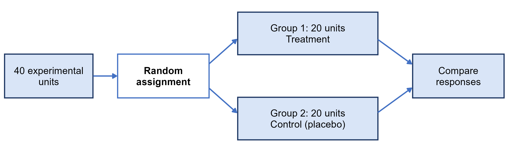
A block is a group of units that are similar in a way that we expect to affect the response. Blocks are formed before the treatments are assigned. In a randomized block design, the random assignment is done separately within each block, and the treatments are compared within blocks.
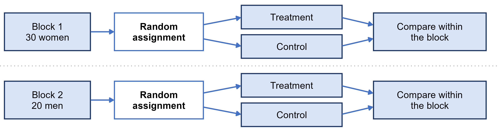
For example, suppose men and women respond differently to a treatment. In a completely randomized design, that difference would add to the variation within each treatment group. Blocking on sex removes this extra variation, which makes a real treatment effect easier to detect. You can think of blocking as the experimental design version of stratifying in sampling.
A matched pairs design is a special kind of block design where each block is a pair of very similar units, such as twins or two plots of land side by side. Within each pair, we flip a coin to decide which unit gets which treatment. Another option is to have each subject serve as their own pair by receiving both treatments in a random order.
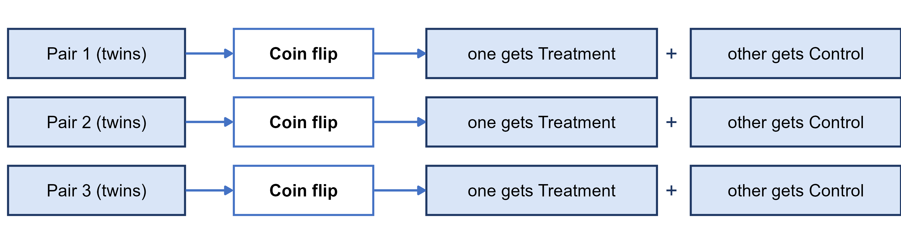
Measurements taken before and after on the same people (for example, blood pressure before and after an exercise program) also give us paired data. However, there is no random order and no control group, so anything else that changed between the two measurements is confounded with the program. This makes before-and-after measurements much weaker evidence than a randomized matched pairs experiment.
Practice: (Adapted from the textbook’s Try It 1.21.) Suppose you want to know whether texting slows down how quickly a driver reacts when the car ahead of them brakes.
Here is one way to think about it:
Chance plays two different roles in a study, and each one lets us draw a different kind of conclusion:
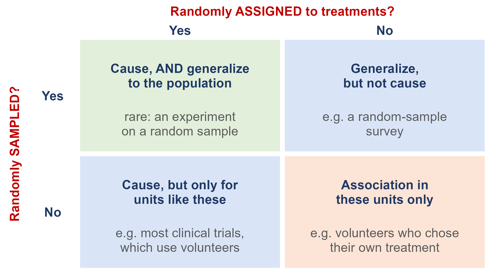
Most studies only have one of the two. For example, a clinical trial of volunteers can establish that a vaccine works, but strictly speaking only for people similar to those volunteers. On the other hand, a survey based on a random sample can describe a whole population, but it can’t explain why its variables are related.
Collecting and using data may not seem like something that raises ethical concerns, but like any human endeavor it does, especially when the data are about people.
For one week in January 2012, Facebook ran a completely randomized experiment on 689,003 users. Each user was assigned at random to one of three conditions: posts with positive emotional content were less likely to show up, posts with negative content were less likely to show up, or the feed was left unchanged as a control. The study was published in 2014, and the paper stated that the research “was consistent with Facebook’s Data Use Policy, to which all users agree prior to creating an account on Facebook, constituting informed consent for this research” (Kramer, Guillory and Hancock, 2014).
The journal had concerns. Its Editorial Expression of Concern said it was “a matter of concern that the collection of the data by Facebook may have involved practices that were not fully consistent with the principles of obtaining informed consent and allowing participants to opt out.” Because Facebook is a private company, it was not bound by the federal rules for human-subjects research. Cornell University’s review board decided that its researcher, who only saw the results, was not directly engaged in human research, so no review was required (PNAS Expression of Concern, via Retraction Watch). The takeaway is that clicking “I agree” on a terms-of-service page is not informed consent, even for a well-designed experiment.
Ethics also means being honest with data. An investigation of the social psychologist Diederik Stapel found that he had created and altered datasets, and the falsified data tainted more than 55 papers he authored and 10 Ph.D. dissertations he supervised (Section 1.4 of the textbook). But problems don’t have to be that big to matter. Example 1.22 in the textbook describes a researcher surveying households in a community who:
Many of the rules we have today came about because of past abuses. In the U.S. Public Health Service’s Untreated Syphilis Study at Tuskegee (1932-1972), 399 Black men with syphilis were followed for decades without being told the true purpose of the study, and without being offered penicillin once it became the treatment of choice (CDC). The public response led to the National Research Act of 1974 and the 1979 Belmont Report, which lays out three principles (HHS Office of Research Integrity):
Some of the ethical requirements that apply to studies today are:
Keep in mind that ethics also applies to data you didn’t collect yourself. If you use a public dataset for your project, make sure it doesn’t contain any information that could identify individuals.
These two weeks were about where data come from, and they divide neatly in two. The first half was about how we choose who to look at — the sampling design. The second half was about whether we can say one thing caused another — the study design. The two questions are separate, and the rest of the course rests on both.
We have been using these three terms throughout, so here they are in one place.
The question that separates the first from the other two is always the same: who decided which group each unit ended up in? If the researcher decided, it is an experiment. If not, it is observational. And remember that this has nothing to do with how the units were sampled — an experiment run on volunteers is still an experiment, and a survey of a perfect random sample is still observational.
The five random designs, and the two non-random ones to recognize and avoid:
The distinction students most often lose: a stratum is a group whose members are alike, and we sample from every stratum; a cluster is a small copy of the whole population, and we sample some clusters and take everyone inside.
Finally, keep the causation rule in front of you: a statistical association between two variables is never on its own evidence that one causes the other, because a lurking variable associated with both can produce that association with no causal link anywhere in sight.